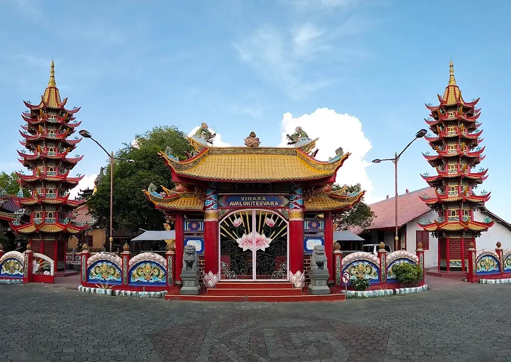

Explore the Sights
Must-visit attractions in and around Surabaya.
Siantar Zoo
Pematangsiantar Zoo (often referred to as Siantar Zoo) was established in 1936 and is one of the oldest zoos in Indonesia. It is located in the heart of Pematangsiantar City, making it easily accessible to both locals and tourists traveling to Lake Toba.

Avalokitesvara Temple
Avalokitesvara Temple is one of the largest temples in Pematangsiantar City, famous for its 22.8-meter-high statue of the goddess Kwan Im, one of the tallest in Southeast Asia. This Buddhist place of worship is also an iconic religious tourist destination.